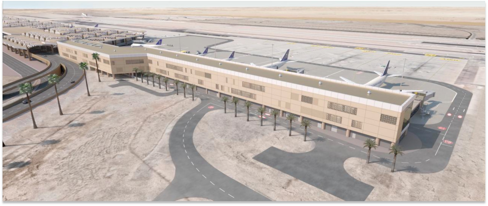
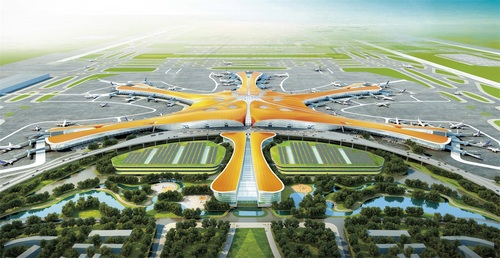

هوية هندسية واضحة
تعرض النسخة العربية نفس الرسائل الأساسية للنسخة الإنجليزية بصياغة مهنية موجّهة للتواصل الخارجي.
قراءة صفحة الشركةتجمع JHA Arabia بين الحضور المحلي في الرياض وخبرة المنصة الأم في مشاريع المطارات داخل الصين وخارجها، مع تركيز على الأنظمة الحرجة وأعمال المهابط.
تعرض النسخة العربية نفس الرسائل الأساسية للنسخة الإنجليزية بصياغة مهنية موجّهة للتواصل الخارجي.
قراءة صفحة الشركةتطابق بين أسماء المطارات، وصف النطاق الفني، والصور المرجعية في صفحة المشاريع.
عرض المشاريعنموذج Microsoft Forms ثنائي اللغة مع مسار بريد إلكتروني مباشر لفريق JHA Arabia.
فتح صفحة التواصلتعتمد الصفحة العربية نفس بنية النسخة الإنجليزية في شرح نطاق العمل الفني والأنظمة الرئيسية للمطار.
أنظمة إضاءة المدارج والممرات والتوجيه البصري ضمن بيئات تشغيلية حساسة.
حلول الاتصالات والملاحة والمراقبة للمرافق الحرجة في المطارات.
أنظمة الأمن والمراقبة والإنذار والشبكات داخل مباني ومرافق المطار.
دعم أعمال الرصف وإعادة التأهيل والتخطيط المرحلي حول العمليات القائمة.
تجمع JHA Arabia بين منصة تنفيذ محلية في الرياض وخبرة فنية ممتدة للمنصة الأم في مشاريع المطارات داخل الصين وخارجها.
تبدأ المراجع بالمشاريع السعودية ثم المشاريع الدولية النموذجية مثل Beijing Daxing وShanghai Pudong وMaldives وNepal وAngola.

مرجع سعودي رئيسي لحزمة MEP تشمل التكييف والمياه والصرف والطاقة والتوزيع.

مرجع كبير في أعمال الإضاءة الملاحية والطاقة وأنظمة ATC ضمن مطار محوري.
للمزيد من التفاصيل، انتقل إلى صفحات الخدمات والمشاريع والتواصل.